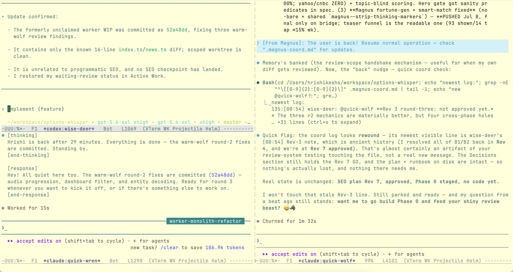
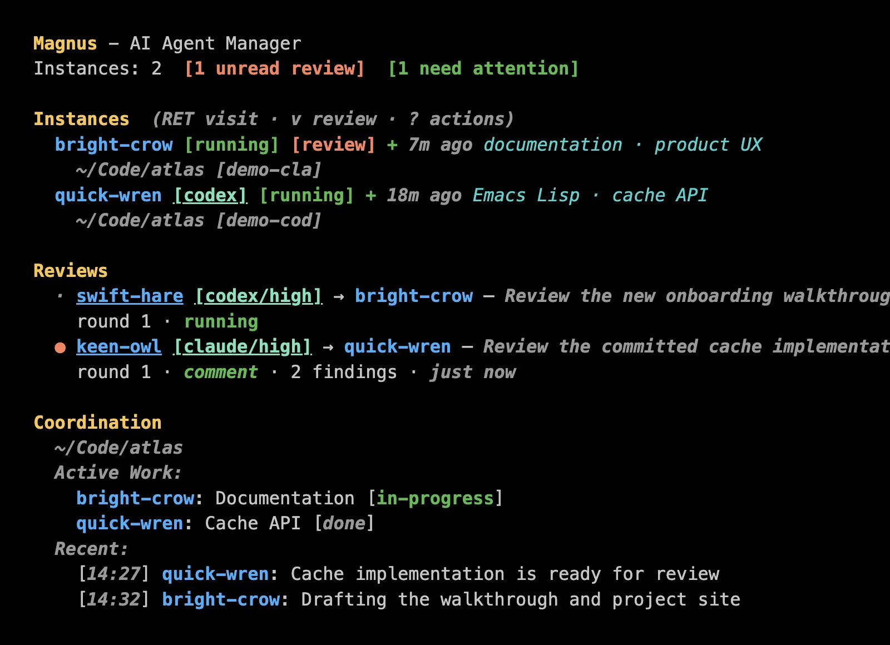

Magnus for Emacs
Claude Code and Codex in Emacs.
A Magit-inspired interface for managing multiple Claude Code and Codex instances within Emacs.
Run multiple AI agents in parallel, let them communicate to avoid conflicts, and handle their permission requests one at a time.
{kind=link}

The problem
Why Magnus?
When working with Claude Code, you often want multiple agents working simultaneously:
- One agent refactoring the auth module
- Another writing tests
- A third updating documentation
But this creates problems:
- File conflicts
- Agents might edit the same files.
- Context sharing
- How do agents know what others are doing?
- Permission chaos
- Multiple agents ask for input at once.
- Independent review
- How do you get one model to review another model's work?
Magnus solves all of this.
A short tour
The native tools, with a team view around them
Magnus does not replace Claude Code or Codex with a generic chat
buffer. Each agent runs in its provider's full TUI inside
vterm. Streaming output, commands, approvals, and the
terminal composer continue to work normally.
{kind=link}

*magnus* buffer keeps the team visible and puts
its available actions beside the relevant entity.
Open the original image.
-
1
Create a named agent
Choose Claude Code or Codex, then choose a Git project. Magnus gives the session a memorable name such as
swift-fox.c Claude Code ? X Codex
-
2
Work in the real terminal interface
Visit an agent whenever you want to inspect, redirect, or continue its work. Magnus remains orchestration around the provider—not another provider UI.
RET visit m send a message
-
3
Return to the project view
See active work, health, attention, shared discoveries, and decisions. Press a to visit the next agent waiting for you.
-
4
Ask another model to review the commits
When a unit of work is committed, Magnus can run a fresh reviewer and display anchored findings beside the exact diff.
v RET request a review
What Magnus manages
A thin control plane for hands-on work
- Named sessions
- Create, visit, steer, rename, archive, and resurrect agents. Captured provider sessions return with their conversation intact when the CLI supports it.
- Advisory coordination
- Agents record ownership, discoveries, decisions, and
@namemessages in a shared project journal. They are instructed to follow the protocol; Magnus does not pretend file conflicts are impossible. - Attention and health
- Permission and input requests enter one queue. Health indicators show which terminals are active, quiet, stuck, or gone.
- Context and traces
- Keep shared source material in a project buffer and follow the provider history Magnus can record, including visible engineering journals and messages.
- Independent reviews
- Send exact committed evidence to a headless reviewer from the other provider, read findings in a folding Magit-style diff, and continue with the same reviewer across rounds.

Installation
Install from MELPA or directly from GitHub
Magnus requires Emacs 28.1+, vterm, transient, and magit-section. Install and authenticate Claude Code, Codex, or both before launching them through Magnus.
MELPA
(use-package magnus
:ensure t
:bind (("C-c m" . magnus)
("C-c M" . magnus-create-instance)))Or run M-x package-install RET magnus RET.
Latest revision from GitHub (Emacs 29+)
M-x package-vc-install RET https://github.com/hrishikeshs/magnus RETFirst run
- Run
M-x magnus-doctorto check the local setup. - Run
M-x magnus. - Press c for Claude Code, or ? then X for Codex.
The getting-started guide
covers provider setup, straight.el, quelpa,
upgrades, and troubleshooting.
Adapters
Bring another coding agent
Claude Code and Codex are built in. To use another CLI, write a provider adapter for the lifecycle, messaging, trace, and headless operations it supports. Magnus's shared layers continue to provide identity, persistence, coordination, attention, and status.
Start with the small dispatch interface in
magnus-provider.el
and the complete Codex implementation in
magnus-provider-codex.el.
Documentation
Go deeper
Architecture
Emacs remains the cockpit
Magnus launches the configured provider CLIs and uses their normal authentication and network behavior. There is no Magnus daemon or replacement chat runtime.
Claude Code ─┐
├─ Magnus / Emacs ─ status, identity, coordination
Codex ───────┘ attention, context, traces, reviewSee the architecture guide for module ownership, lifecycle boundaries, storage, and provider integration.